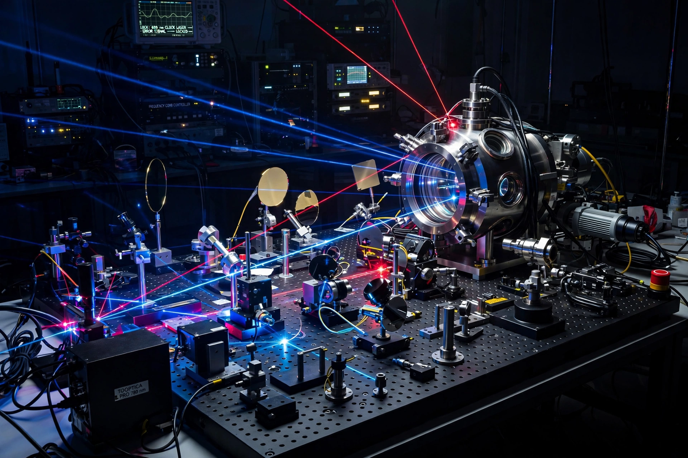

Atomic clock

[Image: Photograph of a modern optical atomic clock laboratory: laser tables and vacuum chambers]An atomic clock is a clock that measures time by monitoring the resonant frequency of atoms. It is based on atoms having different energy levels: electron states in an atom are associated with different energy levels, and transitions between these states occur at extremely well-defined frequencies, which serve as the reference. Since 1967 the SI second has been defined by the caesium-133 hyperfine transition: exactly 9,192,631,770 periods.
The first accurate caesium clock was built by Louis Essen and Jack Parry at the UK's National Physical Laboratory in 1955. Atomic clocks underpin GPS and all satellite navigation (which must correct for both special and general relativistic effects), telecommunications, and tests of fundamental physics. Optical clocks — using laser-cooled atoms or single ions (David Wineland's aluminium-ion clocks) at frequencies hundreds of thousands of times higher — now reach uncertainties near 10⁻¹⁸, better than a second over the age of the universe, and are sensitive enough to measure height differences of centimetres through gravitational redshift; a redefinition of the second around optical standards is planned.
Applications and tests
Networks of atomic clocks timestamp the world's financial trades and power grids; clock comparisons test whether fundamental constants (the Fine-structure constant) drift over time; and miniature chip-scale atomic clocks bring precision timing to drones and sensors. The hydrogen Maser remains the most stable frequency reference over medium timescales and anchors VLBI observations such as the Event Horizon Telescope.